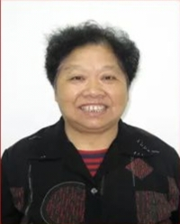

贴近群众心，挖掘身边好人。弋江区紧扣培育和践行社会主义核心价值观这一重大主题，积极选树身边典型，发现鲜活事迹，建立了社区、街道、区三级推评选好人制度。社区成立多个网格，广泛通过网格长、楼栋长和群众发现挖掘身边好人；同时街道汇总媒体和其他渠道收集的好人线索，及时跟进联系，由评审团对身边好人好事进行评选并推荐，不仅将好人事迹评选做广，更是推深做实推荐工作。好人推荐工作由原先单一的街道评选、推荐上报，延伸开展到各级各类文明单位中去，发现不同行业的不同感动，充分挖掘身边真善美，树立身边微典型，大力传播正能量，以实际行动助力文明城市创建。